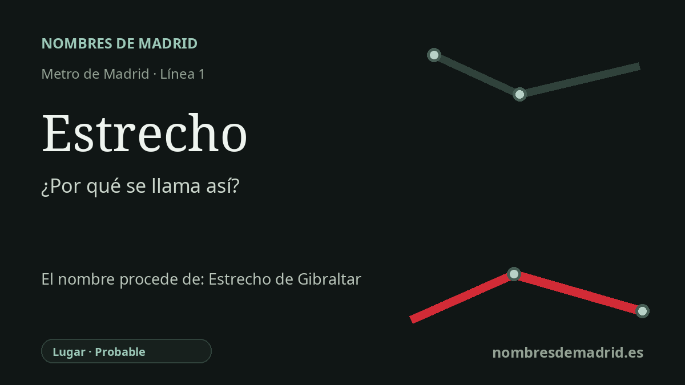

Publicado el · Investigación de Nombres de Madrid · Cómo verificamos cada origen · 7 fuentes consultadas
Respuesta rápida
Estrecho toma su nombre de la zona de Bravo Murillo y Francos Rodríguez, documentada como El Estrecho en fuentes de comienzos del siglo XX. La explicación mejor apoyada es una alusión popular al Estrecho de Gibraltar: para ir desde Madrid/Cuatro Caminos hacia Tetuán, se decía con guasa que había que cruzar “el Estrecho”.
La historia del nombre
La estación de Estrecho toma su nombre del topónimo local El Estrecho, no de una calle inmediata a la estación. La ficha histórica de Metro de Madrid sitúa la estación bajo la calle Bravo Murillo, a la altura de Francos Rodríguez y Las Mercedes, y registra su inauguración el 6 de marzo de 1929 como parada intermedia de la prolongación de la línea 1 entre Cuatro Caminos y Tetuán.
La pista documental más sólida es anterior a muchas descripciones modernas del barrio. Una disposición publicada en la Gaceta de Madrid en 1931 menciona la zona de la calle López de Haro como un “sitio llamado el Estrecho” en el barrio de Cuatro Caminos, con continuación por Francos Rodríguez. Eso demuestra que el nombre estaba en uso local en el mismo corredor urbano de la estación poco después de su apertura.
¿Por qué “el Estrecho”? La explicación mejor apoyada es popular más que administrativa. Tetuán de las Victorias recibió su nombre por la victoria española en Tetuán durante la Guerra de África de 1859-1860, y la historia municipal de Madrid describe cómo aquel núcleo surgió tras el regreso de tropas y comerciantes desde Marruecos. En la memoria vecinal, se decía con guasa que para ir desde Madrid o Cuatro Caminos hacia Tetuán había que cruzar “el Estrecho”, en alusión al Estrecho de Gibraltar entre España y el norte de África.
Ese contexto encaja con el paisaje nominal del viejo Tetuán, pero no conviene convertirlo en un mapa militar perfecto. La ruta histórica municipal señala calles primitivas con nombres relacionados con la Guerra de África, como O'Donnell, Prim, Topete, Ceuta y Wad-Ras. Otros nombres citados a veces en el entorno son más heterogéneos: Bravo Murillo fue un político y figura de las obras públicas, mientras que General Margallo remite a un conflicto marroquí posterior, no a la campaña de 1860.
La confianza, por tanto, es probable, no plenamente verificada. El nombre local de la estación y su fecha de inauguración están bien documentados, y la existencia de un “sitio llamado el Estrecho” cerca del ámbito de la estación consta de forma directa. El origen concreto como broma o alusión Gibraltar/Tetuán es verosímil y aparece en memoria barrial, pero no consta un acuerdo oficial de denominación ni una fuente contemporánea que diga expresamente que la estación se nombró en honor del Estrecho de Gibraltar.